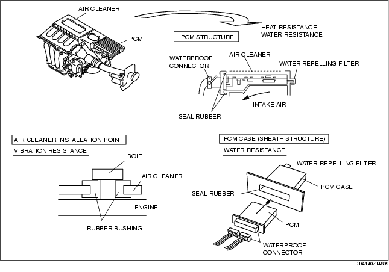

PCM construction/operation [ZY]
Structure
• A 120-pin (two-block) PCM connector has been adopted.
- • The PCM is built into the air cleaner cover. Applying excessive pressure to the cover could damage the PCM. Be careful not to put your hands on the PCM during the removal/installation. Removing the PCM from the air cleaner could damage the sealing or the circuitry. Do not remove PCM from the air cleaner.
• The PCM is located in a position that allows the passage of intake air at the bottom of the PCM case and heat inside the PCM to be radiated by wind created from the vehicle moving. Also, fins are integrated on the PCM upper surface. In this way, the heat resistance of the PCM located directly on top of the engine is ensured.
PCM vibration resistance
• Vibration from the engine is reduced by the use of rubber bushings on the installation area of the air cleaner to the engine, ensuring PCM vibration resistance.
PCM water resistance
• Water penetration into the PCM case is prevented by the use of seal rubber on the seal surfaces of the PCM case and PCM connector. Furthermore, differences in pressure inside and outside the PCM case are adjusted by a water repelling filter on the PCM case, preventing water from penetrating the PCM case.
